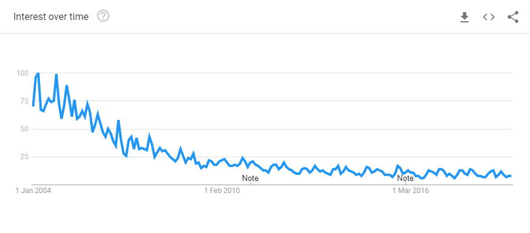

Decisions without actions are pointless. Actions without decisions are reckless.
—John Boyd
Introduction#
This library ports the Miro Samek event processor to Python. If you use this library to prototype your designs in Python, it should be a straight forward process to port them back to his QP framework for a huge performance gain.
About this Documentation#
Statecharts provide a powerful programming technique which can be used to map complex behavior into a set of very small and simple diagrams. When I was first introduced to the technique as a junior developer, I found it baffling. This is the documentation I wish someone had given to me back then.
The technique for drawing a statechart was absorbed by the UML movement in the 1990’s. UML is obsolete, it can’t begin to describe the expressive power of Python, but it can be used to sketch out your ideas well enough so that someone else can understand what you mean. I can’t expect you to know UML; so part of this documentation explains how to draw your pictures.
If you are new to statecharts, the statechart concepts and mechanics are explained through stories and tutorials in zero to one.
If you already understand statecharts, you can immediately jump to the quick start and look at how I implemented a networked, robotic sprinkler using the open weather API with miros in Python. It demonstrates 3 different concurrent statecharts working together.
Miro Samek pulled a lot of the difficult parts of statechart specification out of his code to make it compact and fast. Then he spent an entire chapter of his latest book showing how to regain these features by making simple adjustments to your code; he called this section patterns. In the pattern section, I demonstrate how to implement Miro’s patterns and then show a few more.
The recipes section contains a list of things that you might want to do and a concise example of how to do it.
The examples section contain some more extended examples which can be referenced and then extended for your own designs.
The reflection section goes into the details about how to use the instrumentation that has been built into the miros library. Two different types of sensible logging have been added to this miros, you can use them to see how your statechart is reacting to its environment.
The testing section will demonstrate a set of simple patterns so that you can verify your designs are working as you expect them to.
Finally, if you would like to link your statecharts across a computer network (for IOT applications), you can use the miros-rabbitmq plugin.
History and Context#
I made up the term object-oriented, and I can tell you I did not have C++ in mind.
—Alan Kay
When Alan Kay invented
object-oriented programming (circa 1966), he was inspired by biology. He saw
plants and animals as extremely complicated systems of systems, made up of cells
who’s inner states and clocks were hidden from one another. The only way that
these cells could work together was by producing small chemical messages and
exchanging them with their adjacent cells. He saw this as a great analogy for
managing complexity. He invented a programming language called, smalltalk,
and the parts of it which he modeled from the cell, he called objects.
Message passing was an essential and misunderstood part of his original vision. As modern OOP (C++) programming languages were developed, their designers parsimoniously moved functions into data structures and called these data/function collections, classes. The act of constructing one of these Frankenstein structures (a class), was called “instantiation of an object”. But this object term was a redefinition of Alan Kay’s word because its way of message passing could halt and stutter the entire collective system. To pass a message using C++, was just to call a function in another object and if the function call had to wait for some IO to come in from a computer peripheral, then all of the other objects in the system would have to wait too. This meant that all of the C++ system cells were temporally coupled together since they shared the same synchronous clock. Nature doesn’t work like this, if your cells suddenly started to operate this way, you would keel over dead in seconds. Alan Kay’s original biological metaphor of an object was broken. He ended up having to call his objects, real objects, instead of objects, because the OOP language which he invented, was colonized by the C++ popular culture.
But statecharts build from the miros library, each act as if they were running on their own computer, so they can pass messages like cells pass messages. When a message is passed this way, it is called an event. This means that we have to re-name our objects to something else to differentiate them from instantiated Frankenstein-structures, very much like Alan Kay did. An object that runs in its own thread is called an active object.
Note
The miros library lets you pass messages in three ways:
traditional method synchronous calls are supported
active objects can subscribe to and publish asynchronous public events (messages outside of the cell)
active objects can send and consume private asynchronous events (messages inside of the cell)
The events act like the simple chemical messages that are shared between cells. When an event is published, the active object that produced it goes back to its business, it is not blocked like it would be if it made a function call or a method call. It can do this because it has its own thread (it runs like it owns its own computer). This ability to process in parallel is called orthogonality in statechart theory.
The statechart was invented by the Mathematician David Harel in 1983 as a conceptual tool to help the avionics industry manage their engineering complexity. Instead of working from a metaphor, David Harel’s innovations occurred while working shoulder to shoulder with Israeli software engineers, while he watched them build a jet fighter. He noticed that they could answer questions like, “What algorithm is used by the radar to measure the distance to a target?”, but they did not have answers to questions that seemed more basic, such as “What happens when you press this button […] under all possible circumstances?” After asking such questions, he would watch the engineers dive into a two-volume, 2000 page document; attempting to cross-reference different parts of the tome, written by different authors.

Many large scale engineering disasters occur due to “interface failures,” not as a result of a single component failure, but as a failure of those parts to interface properly with one another. The interface failures are the direct result of teams not having answers to the simple-seeming questions that David Harel asked his avionics team.
We are lucky that David Harel comes from a strong background in mathematical topology and not from a programming perspective. He watched the engineers like an anthropologist would have, and mapped how they talked about things into simple topological maps; often on napkins. He didn’t try to imagine how to program their descriptions but specifically focused on how to draw a picture of what they said, then thought of a way to formalize the pictures into a set of rules. The rules were simple enough that anyone looking at the diagram could quickly understand what would have otherwise taken pages to write down. The pictures described different working parts of the systems as states, and often, these states of operation would also contain the behaviour of other states. From this, he formalized the notion of a hierarchical state machine (HSM). Using this formalism (rules for mapping ideas into pictures), it was possible to build a software framework that could take pages and pages of a complex specification, convert it into a compacted diagram that could quickly be understood by another person, or a team, and compile it into working software. This was a massive contribution to computing. Despite this, it took David Harel over three years to get his work published:
I find the concept of statecharts to be quite interesting, but unfortunately only to a small segment of our readership. I find the information presented to be somewhat innovative but not wholly new. I feel that the use of the digital watch example to be useful, but somewhat simple in the light of what our readership would be looking for.
—Rejection letter to Dr. David Harel from the IEEE (1983): Regarding this paper which has since had over 8000 citations.
Converting complex specifications into software and releasing software is just the start of things though. It has been empirically demonstrated that the majority of a software’s cost goes into its maintenance cycle. Even when we are building new software, the majority of our time goes into troubleshooting our creations. A difficult thing to do as a developer is to create a cognitive picture of the code which is in front of us. Even harder is to challenge our own assumptions as we try to see why our cognitive picture isn’t working as we expect.
If we had a easily understood picture of our design, like a map, troubleshooting old code would be much more comfortable. We wouldn’t have to scan the code to build a mental diagram, the diagram would be given to us as a gift from the past, leaving our working memory available for solving problems.
But we tried drawing pictures before in the 1990s with UML (Universal Modeling Language). The group behind this movement promised systems-understanding through pictures. To do this, they pulled together 14 different ways that people were drawing software systems into one standard.
Then the movement lost momentum because they tried to turn their pictures into its own programming language. More and more icons got added, weirder names where invented, and the pictures and theory created social skisms between “architects” and the practitioners who actually wrote the code. Also, UML emphasized class diagrams without statechart diagrams.
A class diagram only shows how the code is structured, but a statechart diagram tells you how the code will behave.

It is easy to manifest a class diagram in Python since Python started as an object-oriented programming language of the C++ family. But how do you create the code that is described by a behavioural statechart diagram? Well, that’s the point of this library: it provides you with the syntax, concurrency, queuing and messaging infrastructure needed to make it work in Python.
To create machine code from a picture is called model-driven development. Model-driven software is typically proprietary, niched to a specific problem space and expensive. When statecharts first started to gain momentum in the late 1990s, the only way to access their expressive power was to spend a lot of money on this kind of proprietary software.
David Harel was involved in a few of these software companies, and as a result, he was placed in an economical conundrum. If he demonstrated how to implement his theory, he would be giving competing software firms his IP. If he didn’t describe how to apply his theory to actual practitioners, then it would lose momentum, and his idea wouldn’t spread the way he wanted it to. When asked to describe statechart semantics, his firm explained one way of doing it externally while using another way internally. The language and the mechanisms of how to implement his vision became confused, and the UML standards that described statecharts ended up containing contradictions, which led to fragmentation.
In the early 2000s Dr. Miro Samek liberated statechart theory from proprietary model-driven software by implementing a statechart framework in c/C++, and then he showed everyone how he did it. He wrote two different books and a series of articles. Miro Samek took a code-centric approach, so that it made sense to people who actually program; showing how to build his framework using c/C++ in his code listings. If you were to become confused by a term or a diagram, you could just look at his working code and see what he meant.
As a firmware developer, Dr. Samek ran into the tight memory and processing constraints that confine a developer while they write code for small processors. He refactored the Harel formalism to be more performant and practical. Then he published the code that solves the topological problems needed to make it easy for a statechart designer to translate their pictures into working solutions, without having to solve these problems themselves; he called this code the event processor.
Note
This library uses Miros Samek’s event processing algorithm, and his way of thinking about the problem space: this is why it is called miros.
If you would like to translate your design into Miro Samek’s QP framework (for a considerable performance gain), it should be reasonably straight forward to port your Python code to c/C++.
Miro Samek provides his code for free but requires a small payment if you use it in your product. In return for this payment, you get access to a world-class developer, his supporting documentation, and you know that his project will continue to evolve and improve for your next product.
Note
Miro Samek then demonstrated how to get rid of the real-time-OS entirely, how to build a real-time, concurrent system using an event loop (circa 2000). His approach is similar to the event loops provided by twisted and asycio in Python.
There was still a need to draw pictures, so Miro Samek gave away his programmed stencils for the Microsoft Visio drawing package, and he recommended free drawing tools like UMLet.
What he didn’t do was to create his own language, he used existing languages so that a firm wouldn’t have to re-write all of their code. Miro Samek had turned c/C++ into something that was more in line with Alan Kay’s original vision of an object-oriented programming language and with the expressive power of statecharts.
Meanwhile, the software community moved on. UML was used by less and less firms because the pictures of software structure provided by class diagrams just weren’t that useful to practitioners. Proprietary languages started to lose ground to open source languages. Model Driven tools were asymmetric, you could change the model to make code, but if you changed the code, the picture wouldn’t update.
But UML never really went away, here are the google trends for the term “UML” from 2004 to June 2019 (it’s currently very popular in China):
{kind=link}
As a result, there are still open source UML drawing packages in circulation. These drawing packages overemphasize the class drawing aspects of UML, but UMLet for one has enough expressive power to describe statecharts too. You won’t want to use them to make marketing documentation, but they are good enough to keep your drawings small, expressive and easy to change.
To use this library is to program in Python, not pictures; so there is no picture-to-code compiler here. This means you can use whatever picture drawing technology you want. I use UMLet, but if you find something better, email me about it.